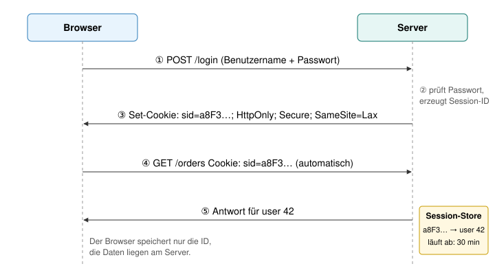

Lektion 1.3 — Teil 1: Konzepte
Sessions & Cookies
Lernziele
- Erklären, warum HTTP Sessions braucht und wie eine serverseitige Session funktioniert
- Anforderungen an eine sichere Session-ID nennen
- Die Cookie-Attribute
Secure,HttpOnlyundSameSiteerklären und richtig einsetzen - Origin und Site unterscheiden
- Session Hijacking und Session Fixation beschreiben und Gegenmaßnahmen nennen
- Timeouts und Logout sicher gestalten
1 — HTTP ist zustandslos
HTTP ist ein zustandsloses Protokoll: Jede Anfrage steht für sich, der Server erkennt nicht von selbst, dass zwei Anfragen vom selben Browser kommen. Nach dem Login (Lektion 1.2) müsste der Benutzer also bei jeder Anfrage erneut sein Passwort mitschicken – unpraktisch und unsicher.
Die Lösung ist eine Session (Sitzung): Der Server merkt sich nach dem Login, dass ein bestimmter Benutzer angemeldet ist, und gibt dem Browser eine Kennung mit, die dieser bei jeder weiteren Anfrage zurückschickt. Dafür gibt es zwei grundlegende Ansätze:
| Ansatz | Wo liegt der Zustand? | Lektion |
|---|---|---|
| Serverseitige Session | am Server; der Browser hat nur eine zufällige Session-ID | diese Lektion |
| Token (z. B. JWT) | im Token selbst, das der Server signiert hat | 1.4 |
2 — Serverseitige Sessions und die Session-ID

- Der Benutzer meldet sich an.
- Der Server erzeugt eine Session-ID und legt im Session-Store (Arbeitsspeicher, Datenbank oder Redis) einen Eintrag an: „Diese ID gehört zu Benutzer 42“.
- Die Session-ID wird dem Browser als Cookie geschickt.
- Der Browser schickt das Cookie bei jeder Anfrage an diese Website automatisch mit.
- Der Server schlägt die ID im Session-Store nach und weiß, wer anfragt.
Wer die Session-ID kennt, ist für den Server dieser Benutzer. Die ID ist daher so wertvoll wie das Passwort und muss folgende Anforderungen erfüllen:
- Zufällig und nicht erratbar: erzeugt mit einem kryptografisch sicheren Zufallsgenerator, mindestens 128 Bit Zufall
- Bedeutungslos: keine Benutzer-ID, kein Zeitstempel, keine fortlaufende Nummer
- Nur im Cookie, nie in der URL – URLs landen in Browser-Verlauf, Server-Logs und im
Referer-Header beim Klick auf externe Links
Fast jedes Web-Framework bringt ein ausgereiftes Session-Management mit. Verwende es, statt Session-IDs selbst zu erzeugen und zu verwalten – und prüfe nur die Konfiguration (Abschnitt 3).
3 — Cookies absichern: Secure, HttpOnly, SameSite
Ein Cookie wird vom Server mit dem Response-Header Set-Cookie gesetzt. Neben Name und
Wert hat es Attribute, die steuern, wann der Browser es mitschickt und wer es lesen
darf. Die Grundlagen kennst du aus dem JavaScript-Kurs (Lektion 3.4); für Session-Cookies sind
folgende Attribute Pflicht:
| Attribut | Wirkung | Schützt gegen |
|---|---|---|
| Secure | Cookie wird nur über HTTPS gesendet | Mitlesen im Netzwerk (z. B. öffentliches WLAN) |
| HttpOnly | JavaScript im Browser kann das Cookie nicht lesen (document.cookie enthält es nicht) | Diebstahl durch eingeschleustes JavaScript (XSS, Lektion 2.6) |
| SameSite | steuert, ob das Cookie bei Anfragen mitgeschickt wird, die von einer fremden Website ausgelöst werden | Cross-Site-Angriffe wie CSRF (Lektion 2.6) |
| Max-Age / Expires | Ablaufzeit; ohne Angabe ist es ein Session-Cookie, das beim Schließen des Browsers verschwindet | zu lange gültige Logins |
| Domain / Path | für welche Hosts und Pfade das Cookie gilt | ungewolltes Teilen mit Subdomains |
Origin und Site
Um SameSite zu verstehen, braucht man zwei Begriffe, die auch später (CORS, CSRF) wichtig sind:
- Origin = Schema + Host + Port.
https://shop.exampleundhttps://api.shop.examplesind verschiedene Origins. - Site = Schema + registrierbare Domain.
https://shop.exampleundhttps://api.shop.examplesind dieselbe Site,https://evil.exampleist eine andere.
Eine Anfrage ist cross-site, wenn eine Seite von Site A eine Anfrage an Site B auslöst – z. B. ein Formular auf evil.example, das an shop.example abgeschickt wird.
Die drei Werte von SameSite
| Wert | Cookie wird bei Cross-Site-Anfragen … | Einsatz |
|---|---|---|
| Strict | nie mitgeschickt – auch nicht beim Klick auf einen Link von einer fremden Seite | sehr sensible Anwendungen (Online-Banking); Benutzer wirkt nach dem Klick auf einen externen Link „ausgeloggt“ |
| Lax | nur bei normaler Navigation (Link-Klick, GET) mitgeschickt, nicht bei Formular-POSTs, Bildern oder fetch-Anfragen | guter Standard für Session-Cookies; Default in modernen Browsern |
| None | immer mitgeschickt; erfordert zusätzlich Secure | nur wenn wirklich nötig, z. B. eingebettete Widgets auf fremden Seiten |
Beginnt der Cookie-Name mit __Host-, akzeptiert der Browser das Cookie nur, wenn es
Secure hat, über HTTPS gesetzt wurde, keine Domain angibt und
Path=/ hat. So kann keine Subdomain das Session-Cookie überschreiben.
4 — Session Hijacking
Beim Session Hijacking stiehlt ein Angreifer eine gültige Session-ID und übernimmt damit die Sitzung – ganz ohne Passwort und auch an MFA vorbei, denn die Anmeldung ist ja schon erfolgt.
| Wie kommt der Angreifer an die ID? | Gegenmaßnahme |
|---|---|
| Mitlesen einer unverschlüsselten Verbindung | überall HTTPS, Cookie mit Secure |
| Auslesen per eingeschleustem JavaScript (XSS) | HttpOnly, XSS verhindern (2.6) |
| ID steht in der URL und landet in Logs oder im Referer | Session-ID nur im Cookie |
| Erraten einer schwachen ID | lange, kryptografisch zufällige IDs |
| Schadsoftware auf dem Gerät des Opfers | kurze Laufzeiten, erneute Anmeldung bei kritischen Aktionen |
5 — Session Fixation
Bei der Session Fixation geht der Angreifer umgekehrt vor: Er stiehlt keine ID, sondern schiebt dem Opfer eine ihm bekannte ID unter.
- Der Angreifer besorgt sich eine gültige, noch nicht angemeldete Session-ID.
- Er bringt das Opfer dazu, diese ID zu verwenden (z. B. über einen präparierten Link, wenn die Anwendung IDs aus der URL akzeptiert).
- Das Opfer meldet sich an. Die Anwendung behält die bisherige ID und verknüpft sie mit dem Konto des Opfers.
- Der Angreifer kennt die ID und ist damit ebenfalls angemeldet.
Nach jedem Login (und bei jeder Änderung der Berechtigungsstufe) eine neue Session-ID erzeugen und die alte ungültig machen. Zusätzlich keine Session-IDs aus der URL akzeptieren.
6 — Timeouts und Logout
| Maßnahme | Bedeutung | Typische Werte |
|---|---|---|
| Idle Timeout | Session endet nach einer Zeit ohne Aktivität | 15–30 min (Banking: kürzer) |
| Absolute Timeout | Session endet spätestens nach einer festen Zeit, auch bei Aktivität | einige Stunden bis ein Tag |
| Logout | Session wird am Server gelöscht, nicht nur das Cookie im Browser | – |
| Re-Authentication | erneute Passworteingabe vor kritischen Aktionen (Passwort/E-Mail ändern, Zahlung) | – |
Gute Anwendungen zeigen außerdem eine Liste der aktiven Sitzungen („Angemeldet auf: Chrome/Windows, iPhone“) und erlauben, einzelne oder alle zu beenden. Nach einer Passwortänderung sollten alle anderen Sessions automatisch beendet werden.
Häufige Fehler
Beim Logout wird nur das Cookie im Browser entfernt. Wer die Session-ID vorher kopiert hat, kann sie weiter verwenden, weil sie am Server noch gültig ist.
Beim Logout die Session im Session-Store löschen bzw. ungültig machen.
Das Session-Cookie kann von JavaScript gelesen werden und wird auch über HTTP verschickt. Eine einzige XSS-Lücke oder ein offenes WLAN genügt für die Übernahme der Sitzung.
Session-Cookies immer mit Secure, HttpOnly und SameSite=Lax (oder Strict) setzen.
Die Session wird schon beim ersten Besuch angelegt und nach dem Login einfach weiterverwendet – die Anwendung ist anfällig für Session Fixation.
Nach erfolgreichem Login immer eine neue Session-ID vergeben.
Aufgaben
Melde dich bei einem Dienst an, den du regelmäßig nutzt. Öffne die DevTools (Tab Application bzw. Speicher → Cookies). Welches Cookie ist vermutlich das Session-Cookie? Welche der Attribute Secure, HttpOnly, SameSite sind gesetzt? Welchen Präfix hat der Name?
Entscheide jeweils, ob die Anfrage same-site oder cross-site ist und ob ein Cookie mit SameSite=Lax mitgeschickt wird:
- Ein Formular auf
https://www.shop.exampleschickt einen POST anhttps://api.shop.example. - Ein Link in einer E-Mail öffnet
https://shop.example/orders. - Ein verstecktes Formular auf
https://evil.exampleschickt einen POST anhttps://shop.example/transfer.
Lege für (a) eine Online-Banking-Anwendung, (b) ein Schulportal und (c) einen Webmail-Dienst sinnvolle Werte für Idle Timeout und Absolute Timeout fest. Begründe die Unterschiede.
Erkläre einer Mitschülerin den Unterschied zwischen Session Hijacking und Session Fixation mithilfe einer Analogie aus dem Alltag (z. B. Garderobenmarke, Hotelschlüssel).
Quiz
5 Fragen · zum Aufklappen klicken
Frage 1 Was speichert der Browser bei einer serverseitigen Session?
Frage 2 Welches Cookie-Attribut verhindert, dass eingeschleustes JavaScript das Session-Cookie auslesen kann?
HttpOnly blendet das Cookie für JavaScript aus. Secure erzwingt HTTPS, SameSite regelt Cross-Site-Anfragen und Max-Age die Lebensdauer.Frage 3 Ein Session-Cookie hat SameSite=Lax. In welchem Fall wird es mitgeschickt?
Lax wird das Cookie bei Cross-Site-Anfragen nur für normale Top-Level-Navigation mit GET mitgeschickt – also beim Klick auf einen Link. POST-Formulare, fetch und eingebettete Ressourcen von fremden Sites bekommen es nicht. Genau das schützt vor vielen CSRF-Angriffen.Frage 4 Welche Maßnahme schützt vor Session Fixation?
Frage 5 Welche Aussagen über Origin und Site sind richtig?
Mehrere Antworten sind richtig.
evil.example ist eine völlig andere Domain und damit eine andere Site.